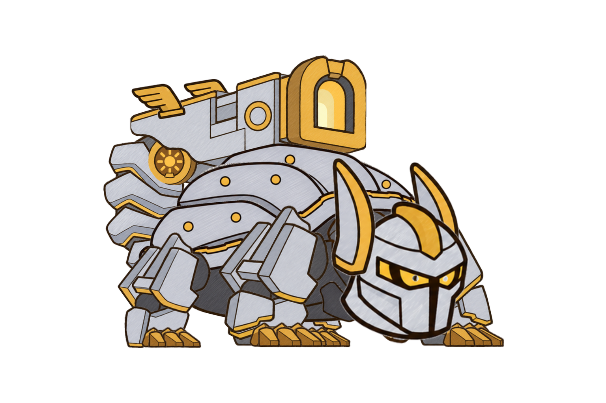
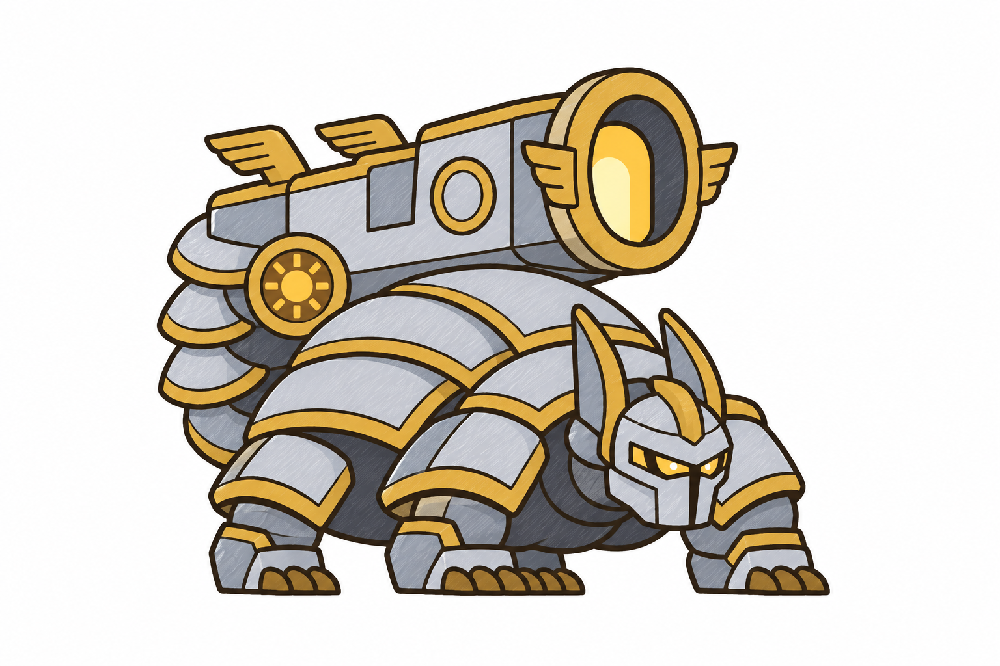
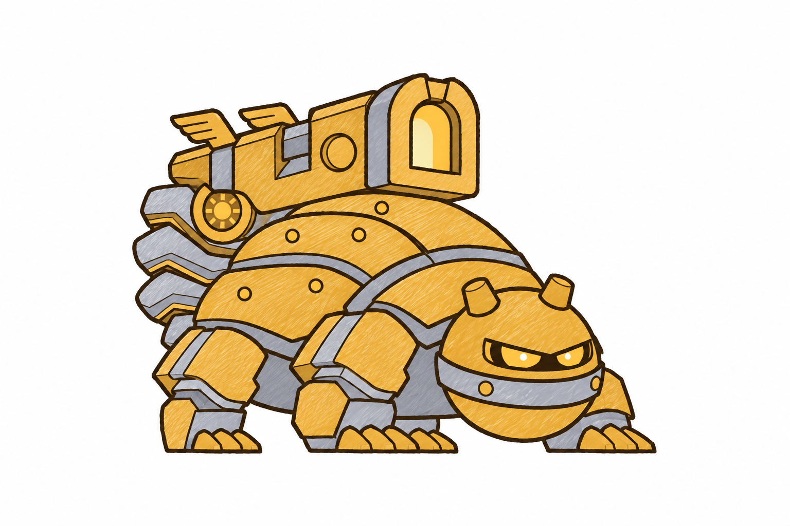
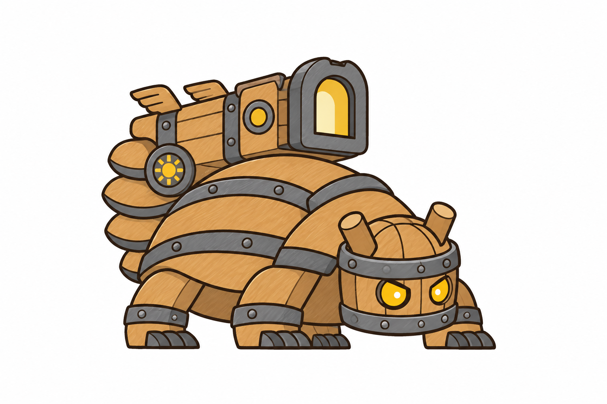

Thú giáp pháo (tướng 9 đảo Kim) — DẠNG 1 non, concept lượt 1

Bố cục: rig dạng 2 đổi tỉ lệ (đầu × 1,45, tai ngắn, pháo × 0,78, đuôi × 0,85), da tạm dạng 2: concept phải trùng dáng, cỡ từng bộ phận

Dạng 2 đã duyệt (concept C)
 A (đề xuất) thú con giáp bạc nhẹ, mũ tròn hở mặt lộ mặt thú con (da xanh xám, mắt tròn to vàng, mõm nhỏ), tai thú ngắn viền vàng, pháo cùng dáng viền vàng mảnh
A (đề xuất) thú con giáp bạc nhẹ, mũ tròn hở mặt lộ mặt thú con (da xanh xám, mắt tròn to vàng, mõm nhỏ), tai thú ngắn viền vàng, pháo cùng dáng viền vàng mảnh

B đồng thau học việc: giáp đồng thau + khớp thép, mũ tròn kín một khe mắt, hai núm sừng đồng, pháo đồng đai thép, vây đồng

C giáp gỗ đai sắt sơ khai: tấm gỗ sáng + đai sắt, mũ thùng gỗ hai lỗ mắt, chốt gỗ thay tai, pháo gỗ đóng đai, khung họng sắt